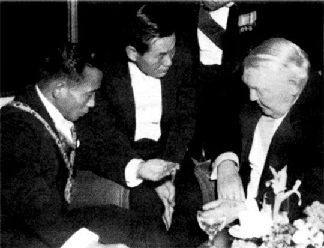
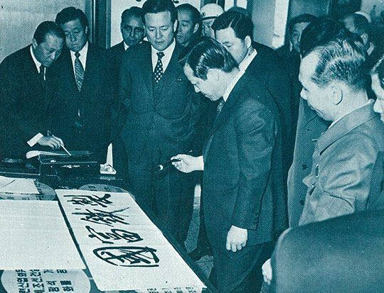
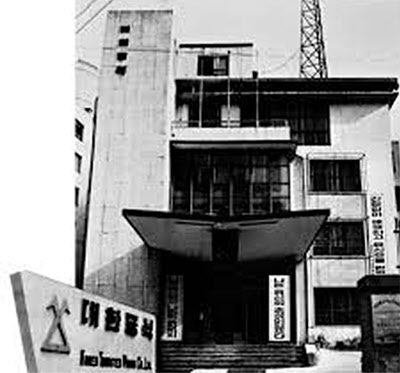
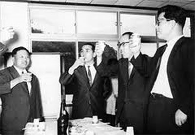

보도일 2014-10-06출처 조선일보 프리미엄조선 연재
1964년 12월 초, 서독(독일) 방문을 앞둔 박정희가 박태준을 청와대로 불렀다.
“대한중석을 맡아줘야겠어.”
‘달러박스’ 대한중석. ‘정치’의 자리가 아니라 ‘경제’의 자리였다. 박태준은 마음을 열었다.
“서독 갔다 와서 만나자. 그 사이에 대한중석에 대해 이것저것 알아봐.”
“준비하겠습니다. 각하의 방문을 우리 광부들과 간호원들이 정말 기뻐하겠습니다.”
“우리가 그 사람들의 고생을 헛되게 하지 말아야지.”
“알겠습니다.”

그해 세모의 어중간한 시기에 이뤄진 ‘박태준 인사’에는 모종의 권력투쟁도 개입되어 있었다. 거사에는 무임승차한 처지에 대통령 비서실장 자리를 꿰차고 앉아 날이 갈수록 권세를 키워가는 이후락. 이 사람을 김종필은 꺼림칙하게 보고 있었다. 그를 대체할 만한 인물을 물색하던 터에 마침 박태준이 일본 특사를 마치고 돌아왔다.
김종필은 새해 기념으로 청와대 분위기를 쇄신하는 인사 때 대통령에게 박태준을 비서실장으로 천거할 작정이었다. 그의 눈에 박태준은 썩 매력적인 카드로 보였다. 정치적 야망이 없으니 뒤탈을 걱정하지 않아도 될 듯했고, 비서실장의 경험도 있을 뿐만 아니라 대통령의 신임도 각별하니 대통령이 마다하지 않을 것 같았다.

이러한 낌새를 맡은 이후락이 도리어 선수를 쳤다. 박태준을 정치 방면에 배치하지 않으려는 대통령의 심중을 꿰뚫은 그가 대통령에게 박태준을 대한중석 사장으로 보내면 어떻겠냐고 건의했던 것. 마침 박태준을 경제 방면에서 활용하기 위해 자리를 찾고 있던 박정희가 쉽게 낙점을 했다.
군정 시절보다 훨씬 더 빈번한 정치적 권모술수를 다뤄야하는 자리에는 박태준의 성품이 어울리지 않는다고 판단한 박정희는 미국과 좀 더 수월히 연결되는 ‘끈’도 원하고 있었다. 그에게 이후락의 용도는 그 ‘끈’이기도 했다. 군사영어학교 출신의 군번 79로, 6‧25전쟁 후 주미 한국대사관 부무관으로 3년간 근무했던 이후락은, 장면 정권이 미국 CIA의 요청에 따라 설립한 ‘79부대’(자기 군번을 붙임)의 책임자로 활약하면서 그쪽에 단단한 끈을 달아두고 있었다. 바로 그것 때문에 그는 5‧16 직후에 짧은 옥고를 겪기도 했었다.
박태준의 성품, 박정희의 안목, 권력 핵심부의 암투. 이 세 가지 요인이 하나로 얽혀 박태준을 대한중석 사장실로 데려갔다. 1934년 경북 달성광산과 강원도 상동광산을 합병해 양질의 텅스텐을 생산해온 고바야시광업주식회사는 1949년 10월부터 상공부 직할 국영기업으로 변신하면서 대한중석광업주식회사로 거듭났다. 대한중석은 1960년대 초반까지 한국 수출총액의 으뜸을 차지하는 그 ‘먹을 것 많은 사정’ 때문에 역설적으로 이승만 정권과 장면 정권에서 정치적 스캔들에 말려들곤 했다.
중석(重石), 텅스텐. 이 광물은 대한민국 건국 초기의 이승만 대통령 시대에 ‘구국의 자원’으로 대접 받았다. 태백산맥에 묻혀 있는 지하자원을 캐고 팔아서 비료를 사겠다고 생각했던 시대. 남한에서 달러로 바꿀 수 있는 광물은 중석, 금, 석탄 정도였다. 그때 이승만의 광산 전문팀이 일제 때 개발한 중석 광산을 주목했다. 중석에는 회중석이 있고 흑중석이 있다. 상동광산은 주로 회중석을 생산했다.
우리 일상에서 흔히 눈에 띄는 텅스텐은 전구의 필라멘트지만 우주선 로켓에도 꼭 들어가는 귀한 광물이다. 무기 제조, 특히 대포의 포신(砲身) 제작에는 필수 소재다. 그래서 미국이 이승만 정부에 상동관산 매각을 요청한 적도 있었다. 그것을 거부함으로써 탄생한 것이 1953년의 한미중석협정이었다. 이 협정은 그때 우리 정부의 금고에 달러를 채워주는 가장 확실하고 가장 안정적인 통로였다.

박태준은 취임에 앞서 대한중석을 살펴보았다. 경영상태, 인사체계, 인력보강의 필요성……. 회사에 대한 기초지식을 파악한 그는 경영원칙부터 확립하기 위해 청와대로 들어가 서독 방문을 마치고 돌아온 박정희와 독대했다.
“어때?”
박정희가 부드럽게 물었다.
“직전 사장이 열심히 했던 흔적이 역력했습니다.”
박태준에게 대한중석 사장 자리를 물려준 이는 공군 참모총장 출신이었다.
“장난칠 사람이 아니지.”
“그렇습니다. 능력도 있는 분인데, 제가 자리를 빼앗은 것 같아서 마음에 걸립니다. 비료공장도 두 개나 새로 생기지 않습니까? 그 중에 하나를 맡겨도 훌륭하게 해내실 겁니다. 또 그렇게 해주시면 저도 인간적인 부담을 덜 것 같습니다.”
“그래? 알았어.”
박정희가 고개를 끄덕였다. 이래서 박태준의 전임 대한중석 사장은 신설 ‘영남비료’ 사장에 취임하게 된다.
“건의가 있습니다.”
박태준이 박정희를 진지하게 쳐다보았다.
“뭔가?”
“현재 대한중석의 심각한 외부적 문제는 중공입니다. 소련과 중공의 관계가 나빠서 소련이 중공산 텅스텐 수입을 금지하자 중공이 서방 국가들에게 덤핑으로 내다팔기 때문에 우리가 수출경쟁에서 불이익을 당하게 돼 있습니다. 그런데 더 중요한 것은 내부적 문제입니다. 내부적 문제만 잘 해결하면 외부적 문제는 충분히 극복할 수 있습니다.
과거에 대한중석은 정치적 스캔들에 휩싸이기 일쑤였고 또 그것이 부패와 부실경영을 더 악화시켰습니다. 파벌도 심한 조직입니다. 공군파다, 경기파다, 뭐다. 이것도 퇴치해야 합니다. 그래서 저에게 맡기신 이상, 앞으로는 정부나 여당에서 일절 회사경영에 간섭하지 않도록 보장해주십시오.”
박정희가 대뜸 답했다.
“약속하지.”
기분 좋게 청와대를 나서는 박태준에겐 드디어 ‘경영의 현장’이 기다리고 있었다. 육군대학‧국방대학‧참모‧지휘관을 두루 거치며 갈고 닦은 실력, 국가재건최고회의 비서실장과 상공담당 최고위원으로서 국가경영에 참여한 경험, 그 기간에 보충학습처럼 배운 경제‧경영학 지식 등을 총동원해서 어떡하든 빠른 시일 안에 적자에 시달리는 ‘최대 달러박스’ 국영기업을 정상궤도에 올려놓아야 했다.
박태준은 ‘사람’을 제일 중시했다. 인재의 적재적소 배치, 외압과 파벌 배격, 투명인사 확립, 선진적이고 합리적인 회계관리, 영업원리 개선, 후생복지 개선 등 모든 업무들을 일사불란하게 더불어 실행할 ‘사람’이 있어야 했다. 그러나 ‘사람’이 그냥 굴러들어오는 금덩어리는 아니었다. 안에서도 찾고 밖에서도 찾아야 했다.

빈곤한 한국에서 수출 주력을 담당하는 기업답게 대한중석엔 신임 사장의 눈에 띄는 인재들이 박혀 있었다. 그가 국방부 인사과장 시절에 물동과장으로 함께 일했던 고준식, 그리고 안병화, 박종태, 장경환……. 그래도 박태준은 마음을 놓을 수 없었다. 특히 회계관리와 인사관리에 새 질서를 세워야 했다. 그는 밖에서 찾기로 했다. ‘밖’이란 군대였다.
6‧25전쟁 때는 유격대원이었고 박태준이 육사 교무처장 때는 육사 교무과장이었으며 미국 육군경리학교에 유학한 황경노, 그가 천거한 노중열, 일본열도를 함께 종주했던 인사관리의 베테랑 최정렬, 경리장교 홍건유 등이 합류했다. 대한중석에는 곧 ‘구식 부기’가 사라지고 현대식 관리기법이 도입된다.
그런데 박태준이 기존 대한중석 인재들과 만나는 자리에 막 삶의 길을 바꾼 예비역 장교들까지 합세한 일은 대한중석의 오랜 인습을 깨뜨리는 작은 성과에만 머물지 않았다. 서로 팀워크를 맞추고 정신적 공명을 일으킨 그들이 불과 3년 뒤에 영일만 모래벌판으로 함께 이동하게 되는 것이다.
박태준은 ‘철저한 공정인사’와 ‘인사청탁 배격’을 내걸고 이를 어기면 가차 없이 불이익을 주겠다고 공약했다. 신임 사장의 폭탄선언을 그러나 곧이곧대로 듣는 분위기가 아니었다. 불과 며칠 만에 청와대 고위인사의 메모가 사장실로 들어왔다. 특정인 하나를 승진시키라는 압력이었다. 그는 시험당하는 기분이었다. 즉각 인사위원회를 개최하고 절차를 거쳤다. 바깥의 줄을 끌어들이면 불이익을 주겠다던 공약에 따라 ‘특정인’에게 권고사직을 통보했다. 조롱당한 권력자가 얌전히 넘어갈 리 만무했다. 그러나 박태준은 냉큼 받아쳤다.
“청탁을 말려야 할 분이 너무 심하지 않소? 그 사람에게 능력껏 일하면 능력대로 대접받게 되어 있다는 이치부터 가르치는 게 좋겠소. 각자 맡은 일이나 제대로 합시다.”
그러나 청와대 고위인사보다 훨씬 상대하기 어려운 이가 찾아왔다. 쫓겨난 ‘특정인’의 어머니였다. 초로의 여인은 다짜고짜 눈물을 앞세웠다. 6‧25전쟁 때 남편을 잃고 혼자 키운 외아들이 좋은 직장에 취직한 보람 하나로 살아가고 있으니 어미의 불쌍한 처지를 봐서라도 한 번만 봐 달라. 부산 자갈치시장에서 서울까지 올라온 모정이 박태준의 가슴을 울렸다.
반칙을 시도했다가 시범 케이스에 걸려든 사원은 부산의 명문 고교를 거쳐 서울대를 졸업한, 학벌로만 따지면 이른바 ‘일류’였다. 하지만 박태준은 가슴을 쓸어내려야 했다. 새로운 기풍을 위해 모정을 희생시켜야 했다. 다만 그의 뇌리에는 전쟁미망인의 하소연이 가시로 박혔다. 몇 년 뒤, 문제의 ‘특정인’을 찾아내 포항제철로 불러들일 때에 가서야 비로소 그 가시를 스스로 뽑게 되지만….